Competency-based and progressive: foundational electrophysiology through advanced clinical pattern recognition, weighted toward the conditions where reading the tracing right changes what happens to the patient. Recommended training volume: ≥500 ECG interpretations (COCATS 4 Level I). Tap any part to expand.
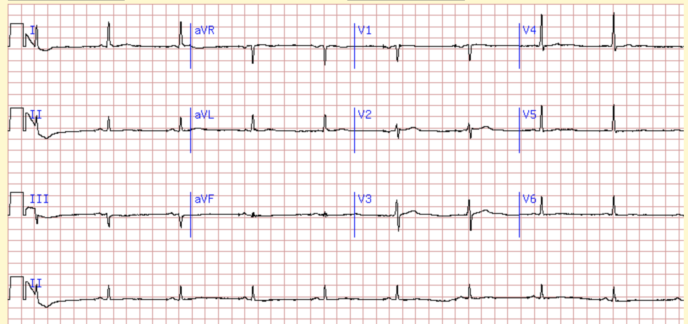
Click to Reveal Answer
- Sinus bradycardia with baseline artifact — artifact is random. These deflections are sharp, uniform in shape and appear at a fixed interval before every single P wave across most leads. That time-locking is what separates a pacing spike from noise.
- Sinus rhythm with pre-excitation variant — pre-excitation means a short PR with a slurred delta upstroke and a wide QRS. Here the QRS complexes are narrow and normally shaped, and the A–QRS interval of roughly 160 ms is normal, not short.
- AV sequential pacing with ventricular pseudo-fusion beats — AV sequential pacing would show a second spike immediately before each QRS. Every QRS here is native, preceded by no spike at all, so there is nothing for a ventricular stimulus to fuse with.
- Ectopic atrial bradycardia — an ectopic atrial focus changes P-wave morphology but produces no spike. The discrete sharp deflection preceding each P wave is the finding that makes this paced rather than merely ectopic.
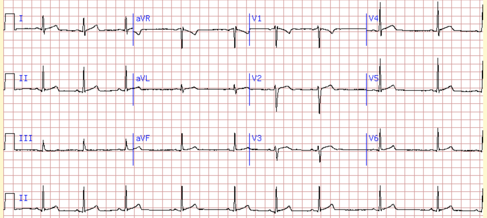
Click to Reveal Answer
- Right ventricular hypertrophy would need R taller than S in V1 with right axis deviation, and usually right atrial abnormality alongside it. R-wave progression across the precordium is normal here and the axis sits at +60°.
- Left ventricular hypertrophy requires voltage criteria to be met — S in V1 plus R in V5 or V6 reaching 35 mm for Sokolow-Lyon. The voltages on this tracing are unremarkable.
- Severe hypokalemia prolongs repolarisation: a long QT–U with flattened T waves, sometimes ST sagging, and often prominent U waves. The QT here is 0.39 s and there are no prominent U waves.
- Left atrial abnormality needs a P wave of 120 ms or more in lead II, notched, or a deep wide terminal negative component in V1. P-wave duration and morphology are both normal.
The ECG is the sum of millions of action potentials projected onto the skin. One rule explains every deflection: depolarization toward a lead reads up, away reads down.
Action potential — 5 phases
- 0 — rapid depolarization: Na⁺ influx in working myocytes; Ca²⁺ influx in nodal cells.
- 1 — early repolarization (K⁺ efflux).
- 2 — plateau (Ca²⁺ in balances K⁺ out); the long refractory period unique to cardiac cells — stops tetany.
- 3 — repolarization (K⁺ efflux dominates).
- 4 — resting −90 mV; pacemaker cells slope upward here (automaticity).
Why it matters84-word note
Why TP and ST are both flat109-word note
Conduction hierarchy (intrinsic rates)
Fastest pacemaker wins (overdrive suppression); lower sites are backups. The AV node's built-in delay = the PR segment, and it's your drug target in narrow-complex SVT. Sympathetic → ↑rate/conduction/contractility; vagal → ↓SA rate, ↓AV conduction.
Why it matters85-word note
Standardize before you interpret. Wrong paper speed, bad calibration, or a swapped lead manufactures pathology that isn't there.
Grid & calibration
Board move68-word note
Intervals to own
Board move71-word note
Limb leads (I, II, III, aVR, aVL, aVF) view the frontal plane; precordials (V1–V6) the horizontal. Einthoven: lead II = lead I + lead III. P = atrial depolarization; QRS = ventricular depolarization; T = repolarization; U = late repolarization (tall in hypokalemia).
Alignment, not just voltage148-word note
Why aVR is the odd one out120-word note
Run the same five steps on every tracing, every time. The disciplined read is how you catch the quiet killer hiding behind the obvious finding.
1 · Rate
Count big boxes between R waves: 300 – 150 – 100 – 75 – 60 – 50. Slow/irregular → QRS in a 6-second strip ×10.
2 · Rhythm
Regular? A P before every QRS and a QRS after every P? An upright P in lead II = sinus origin.
3 · Axis — read leads I and aVF
| Pattern | Lead I | aVF |
|---|---|---|
| Normal | up | up |
| LAD (confirm w/ II) | up | down |
| RAD | down | up |
| Extreme | down | down |
4 · Intervals · 5 · Morphology
Intervals: PR, QRS, QT. Morphology: chamber size, ST/T changes, pathologic Q waves.
Step 4 in practice114-word note
Practice — run the five steps on a normal tracing
Every abnormal tracing in the practice library is a departure from this one. Work it in order — rate, rhythm, axis, intervals, morphology — and satisfy yourself that all five come back clean before you go hunting for pathology.
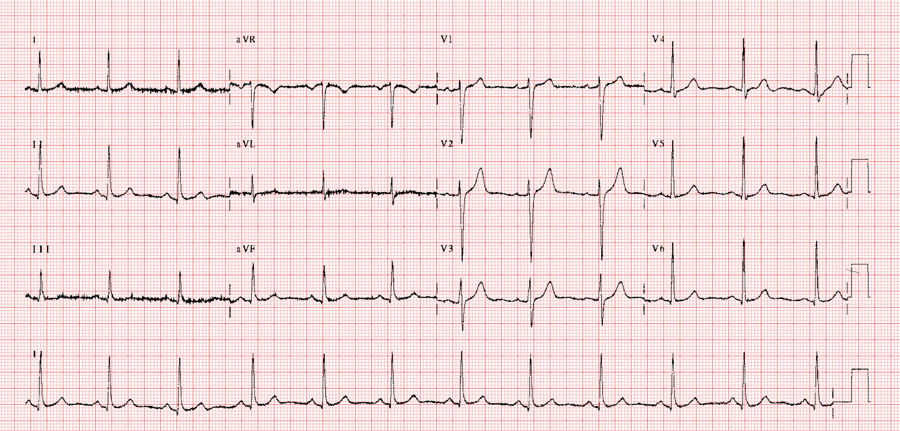
Click to Reveal Answer
- An irregular rhythm would need the 6-second method. This rhythm is regular, so 300 divided by big boxes works.
- Left axis deviation requires lead I upright with aVF negative. Both are upright here.
- A PR beyond 200 ms would be first-degree AV block — more than 5 small boxes. This PR falls within 3 to 5.
- Poor R-wave progression means the R fails to grow across the precordium. It grows normally, with the transition around V3 to V4.
Sinus P upright in II, inverted in aVR · one P for every QRS · R grows and S shrinks across V1 → V6 · transition where R = S at V3–V4 · T concordant with the QRS in every lead but aVR
aVR is the built-in error check: if its P wave is upright, suspect limb-lead reversal before you suspect disease.
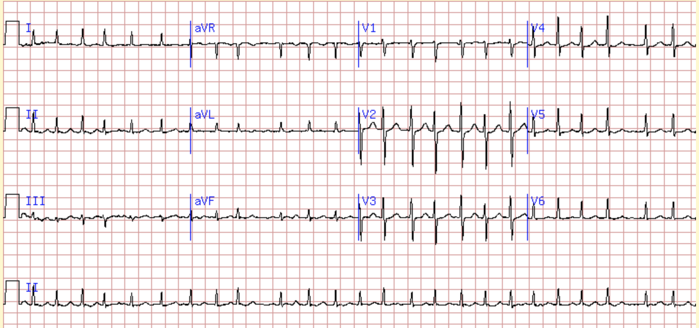
Click to Reveal Answer
- Multifocal atrial tachycardia requires at least three distinct P-wave morphologies. There are no discernible P waves here at all — only a fibrillatory baseline — and MAT usually runs slower, around 100–130.
- Atrial flutter with variable block would show a sawtooth baseline at a fixed atrial rate near 300, and its R–R intervals fall into repeating patterns — regularly irregular. This baseline is fibrillatory, and the irregularity has no pattern to it.
- Sinus tachycardia with premature atrial complexes would show discrete upright sinus P waves with occasional early abnormal ones, and the underlying rhythm would be regular between ectopics. No organised atrial activity is present.
- Paroxysmal supraventricular tachycardia is regular. This rhythm is irregularly irregular, which excludes it.
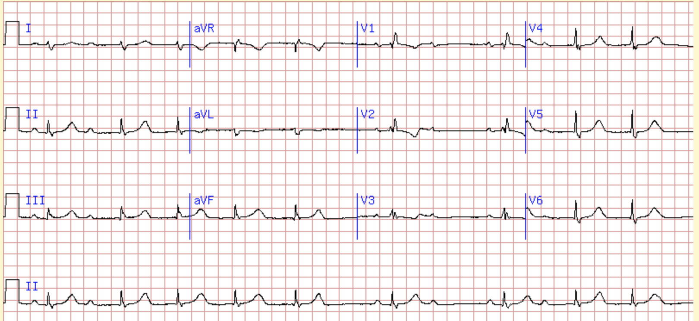
Click to Reveal Answer
- Complete heart block means no fixed relationship between P waves and QRS complexes. Here the PR intervals are plainly related to the P waves and lengthen in an orderly sequence before a beat drops, and conduction then resumes — the AV node is conducting, just failing periodically.
- Isorhythmic AV dissociation has atrial and ventricular rates that are nearly equal, with P waves drifting into and out of the QRS and no beats dropped by block at all. This tracing has clearly non-conducted P waves with progressive PR lengthening.
- Mobitz type II requires a constant PR interval before the sudden dropped beat. Here the PR lengthens progressively — and decisively, the PR after the dropped beat is much shorter than the one before it, which is the Wenckebach signature and does not occur in type II.
- Blocked premature atrial beats would require the non-conducted P waves to arrive early. These sinus P waves come on time at the expected interval, so they are not premature — they are being blocked, not arriving too soon to conduct.
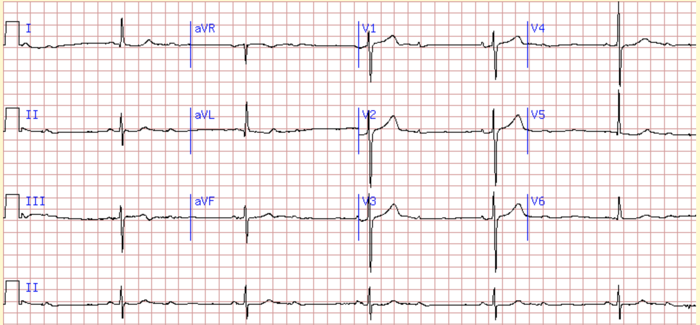
Click to Reveal Answer
- Atrial tachycardia with AV block requires an atrial rate above 100. The sinus rate here is about 64 — entirely normal. (That combination is classic for digoxin toxicity, and this patient is on no cardiac medications.)
- Marked sinus bradycardia would mean the sinus node is firing slowly. It is not: the P waves march at about 64. What is slow is the ventricular rate at 32, because every second P wave is blocked. The sinus node is healthy and the AV node is the problem.
- Complete third-degree AV block shows no fixed relationship between P waves and QRS complexes. Here the conducted PR interval is constant at about 200 ms and the atrial rate is exactly double the ventricular rate — a fixed 2:1 relationship, which is second-degree by definition.
- 3:2 AV Wenckebach would show progressive PR lengthening across two conducted beats before a drop, in repeating groups of three P waves. This tracing shows every alternate P blocked with a constant PR. Worth noting though: this patient did show 3:2 Wenckebach on other recordings, which is precisely the clue that his block is nodal.
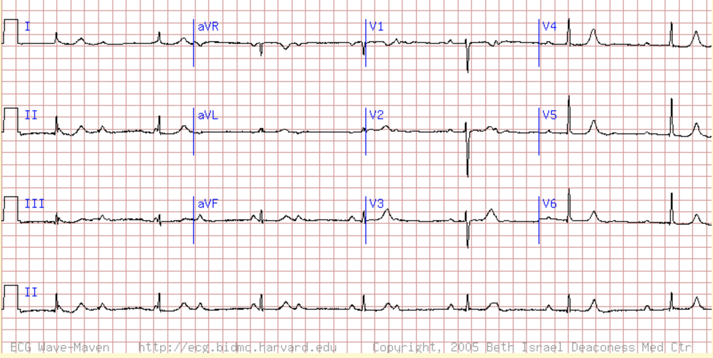
Click to Reveal Answer
- Sinus bradycardia with first-degree AV block conducts every P wave, just slowly — a fixed, prolonged PR before every QRS. Here the PR distance changes from beat to beat because the two chambers are not communicating at all.
- Mobitz I (Wenckebach) requires some conducted beats with a PR that lengthens progressively before a drop. That means a demonstrable P-to-QRS relationship, which is exactly what is absent here.
- Mobitz II also requires conducted beats, with a constant PR interval punctuated by sudden dropped beats. Again there is no fixed PR anywhere on this tracing.
- Sinus arrest with a junctional escape is the best distractor, because it also produces a slow narrow-complex rhythm from the AV junction. The difference is the atria: in sinus arrest there are no P waves at all, because the sinus node has stopped. Here P waves are present and marching steadily at a rate faster than the QRS — the sinus node is working, the AV node is not conducting.
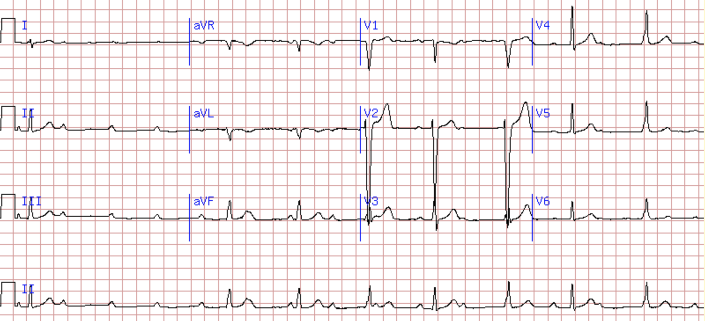
Click to Reveal Answer
- Severe chest pain points at ischemia, and an inferior MI can certainly block the AV node — but that is a story for an older patient with ST-segment changes. Neither is present here, and chest pain is a symptom rather than a mechanism.
- Sick sinus syndrome is disease of the sinus node, so the sinus rate would be slow. It is not: the P waves run at about 90. The sinus node is working perfectly well; the conduction below it is not.
- Tricyclic overdose blocks sodium channels, producing a wide QRS, a prolonged QT and a terminal R wave in aVR, usually with anticholinergic tachycardia. It does not give advanced AV block with a narrow junctional escape.
- Athlete’s heart with high vagal tone is the trap, and the tracing rules it out. Vagal tone slows the sinus node and AV conduction together — so a vagal mechanism would come with a slow sinus rate. A sinus rate of about 90 alongside this degree of block argues strongly against vagus and points to disease in the conduction system itself.
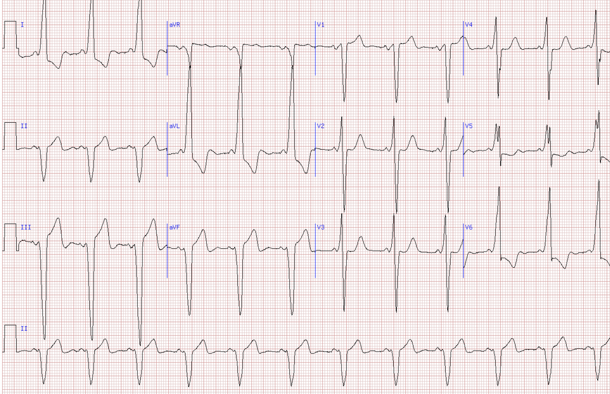
Click to Reveal Answer
- LBBB gives a broad notched R in I, V5 and V6 with a deep QS in V1 — and critically a normal PR interval. Here the PR is short with a slurred delta upstroke.
- AV sequentially paced rhythm requires visible pacing spikes before the P wave and before the QRS. None are present.
- AIVR is a ventricular rhythm at 50–110 with no relationship to preceding P waves. Here every QRS follows a P wave at a short, fixed interval.
- Inferior STEMI gives convex ST elevation in II, III and aVF with reciprocal depression in I and aVL. The inferior negativity here is the delta wave and secondary repolarisation change of pre-excitation, not injury current.
Supraventricular = narrow QRS. The P wave — its shape, count, or absence — is the entire diagnosis.
- Sinus rhythm — upright P in II, one per QRS, 60–100. Sinus arrhythmia (rate varies with breathing) is normal in the young.
- AFib — irregularly irregular, no organized P waves, fibrillatory baseline. The #1 board buzzword.
- Atrial flutter — sawtooth F waves (~300/min), usually 2:1 → ventricular ~150. A regular SVT at exactly 150? Suspect flutter.
- MAT — ≥3 distinct P-wave morphologies, rate >100, irregular. Classic in COPD/hypoxia.
- Atrial tach with AV block — think digitalis toxicity.
Board move94-word note
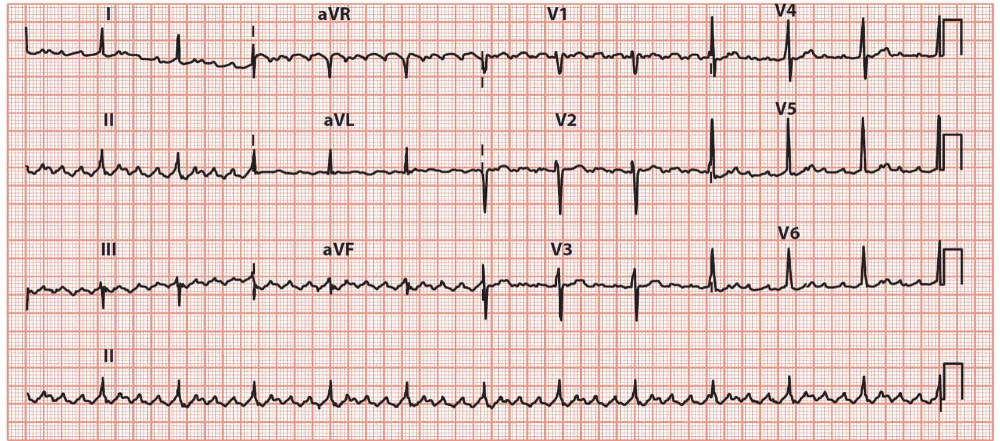
Click to Reveal Answer
- Sinus tachycardia shows discrete upright P waves, one per QRS, and rarely reaches this rate at rest in an adult.
- Atrial fibrillation is irregularly irregular with a chaotic fibrillatory baseline — not an organised sawtooth at a fixed rate.
- AVNRT has no organised atrial activity at all; the P wave is buried in the QRS.
- MAT needs at least three distinct P-wave morphologies and is irregularly irregular.
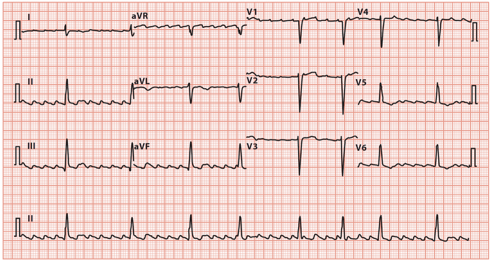
Click to Reveal Answer
- A slower flutter circuit would show fewer, wider-spaced atrial waves. Count them between QRS complexes — the atrial rate is unchanged.
- Atrial fibrillation would replace the organised baseline with chaotic fibrillatory activity and make the ventricular response irregularly irregular.
- A junctional escape rhythm would mean the atria were no longer driving the ventricle, with no relationship between atrial waves and QRS complexes.
- Independent second-degree AV block is not a separate diagnosis here — in flutter the blocked waves are the conduction ratio, so you name the ratio rather than a coexisting block.
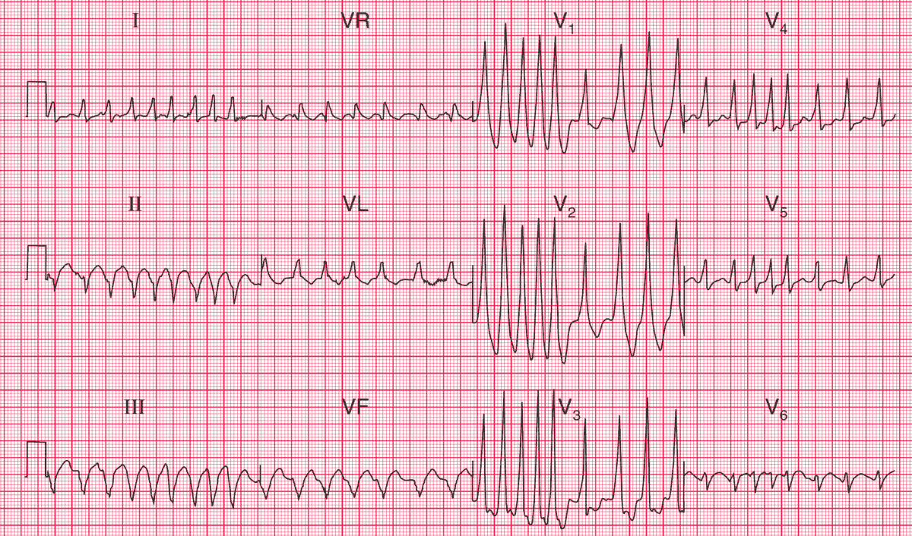
Click to Reveal Answer
- Polymorphic VT is a ventricular rhythm with continuously changing axis; it does not arise from irregular atrial activity and would not sustain at this rate with preserved consciousness.
- Rate-related bundle branch block produces a constant wide morphology once it appears. Beat-to-beat variation in shape is the signature of varying degrees of pre-excitation.
- Torsades twists around the baseline, arises on a prolonged QT and is usually self-limiting or degenerates to VF.
- A paced rhythm would show pacing spikes before the wide complexes. None are present.
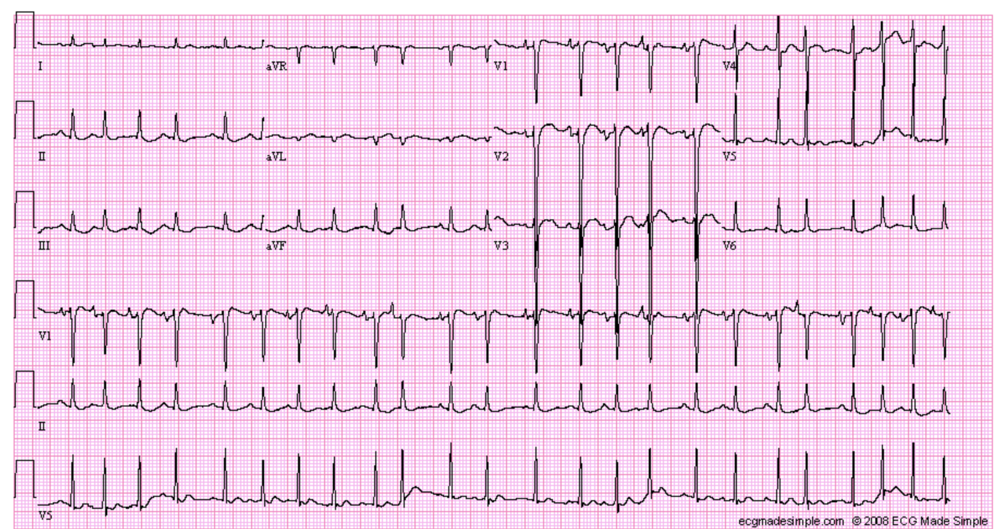
The PR interval and the pattern of dropped beats tell you where the block sits and how dangerous it is. Location decides urgency.
| Block | Signature | Level / Risk |
|---|---|---|
| 1st degree | PR >200 ms, every P conducts | Benign |
| Mobitz I | PR lengthens → drop (PR after drop is shortest) | AV-nodal · benign |
| Mobitz II | Constant PR → sudden drop, often wide QRS | Infranodal · pace |
| 3rd degree | P's and QRS's independent, atrial > ventricular | Pace |
Board move65-word note
How to read it62-word note
2:1 block can't be typed from one strip: narrow QRS → likely nodal (I); wide QRS → likely infranodal (II). 3rd-degree escape sets survival — junctional (narrow, 40–60) vs ventricular (wide, 20–40).
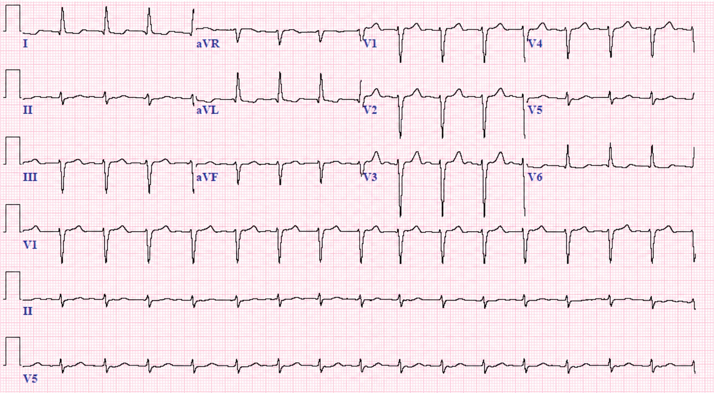
Click to Reveal Answer
- Sinus bradycardia fails on two counts. It requires an upright sinus P wave before every QRS in lead II — absent here — and a rate below 60. This rate sits in the normal range, so even if the P waves were sinus the label would be wrong.
- First-degree AV block cannot be diagnosed without a conducted P wave to measure from. The definition is a PR interval above 200 ms, and there is no antegrade P wave preceding these complexes to give a PR at all.
- Ectopic atrial rhythm is the best distractor, because a low atrial focus also produces an abnormal — often inverted — P wave in the inferior leads. The distinction is timing: in an ectopic atrial rhythm the inverted P still precedes the QRS with a measurable PR interval, whereas in a junctional rhythm the P is absent, buried inside the QRS, or appears after it as a retrograde deflection.
When the SA node fails or a re-entry circuit fires, the junction runs the show: narrow QRS with P waves absent, inverted, or retrograde.
Junctional rhythms — when the junction is the pacemaker
Why the split matters80-word note
Re-entrant SVT — AVNRT versus AVRT
| AVNRT | AVRT | |
|---|---|---|
| Circuit | within AV node | accessory pathway (WPW) |
| Frequency | most common SVT (~60%) | orthodromic 90% (narrow) / antidromic 10% (wide, mimics VT) |
| Clue | pseudo-r′ in V1, pseudo-S inferiorly | retrograde P after QRS (short RP) |
The trap83-word note
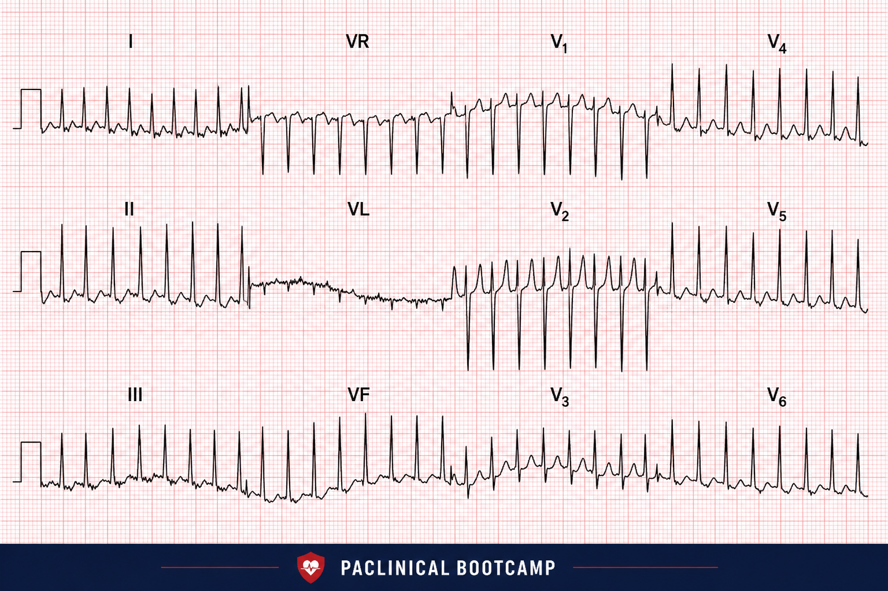
Click to Reveal Answer
- Sinus tachycardia would show a discrete upright P wave before every QRS in lead II.
- Flutter with 2:1 conduction sits near 150 and shows a sawtooth baseline, best seen in II, III, aVF and V1.
- Atrial fibrillation is irregularly irregular by definition; this rhythm is regular.
- Junctional tachycardia is an automatic rhythm that tends to warm up and slow down gradually rather than start and stop abruptly, and it does not terminate with adenosine.
The narrow-complex workup
Narrow-complex workup: regular or irregular first (irregular → AFib / MAT / flutter with variable block). For regular SVT, vagal maneuvers / adenosine either break AVNRT/AVRT or transiently block the node to unmask flutter.
Where this fits105-word note
Wide QRS (≥120 ms) from a ventricular focus. The safe default: assume VT until proven otherwise.
- PVCs — wide, bizarre, early, no preceding P, usually a full compensatory pause. Bigeminy / trigeminy / couplets; unifocal vs multifocal.
- AIVR — regular wide rhythm at 50–100; classic during reperfusion after MI — benign and self-limited.
- VT — ≥3 consecutive ventricular beats >100. Monomorphic (scar) vs polymorphic (ischemia/channelopathy). Sustained ≥30 s or unstable.
- Torsades — polymorphic VT on a long QT, twisting around baseline → magnesium.
- VF — chaotic, no QRS → defibrillate.
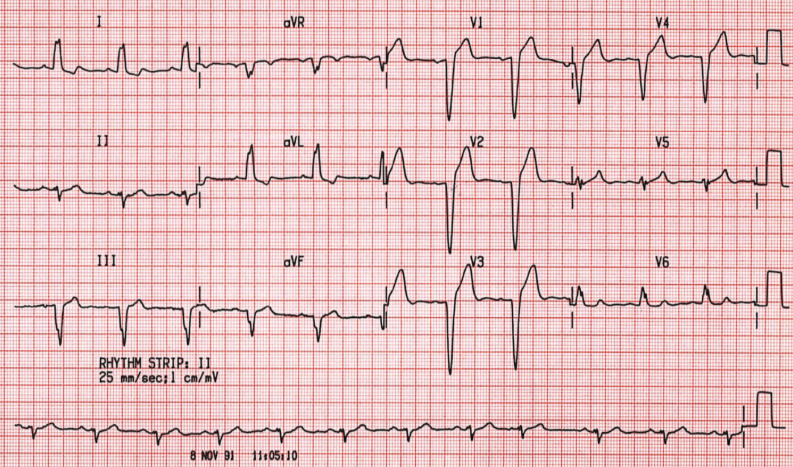
Click to Reveal Answer
- Right bundle branch block is the mirror of this. RBBB gives an rSR′ in V1 — the “rabbit ears”, an M shape — with a wide slurred S wave in I and V6. Here V1 carries a deep negative complex, the opposite pattern. MaRRoW for RBBB, WiLLiaM for LBBB.
- Left anterior fascicular block shifts the axis leftward to between −45° and −90°, with a qR in aVL and rS inferiorly — but it keeps the QRS under 120 ms. Only one fascicle is out, so the ventricle still activates quickly. A QRS this wide means a whole bundle is blocked, not a fascicle.
- Ventricular paced rhythm is the genuine look-alike, because pacing the RV apex depolarises the right ventricle first and produces LBBB-like morphology. The discriminator is the pacing spike — a sharp narrow deflection immediately before each QRS. There are none here.
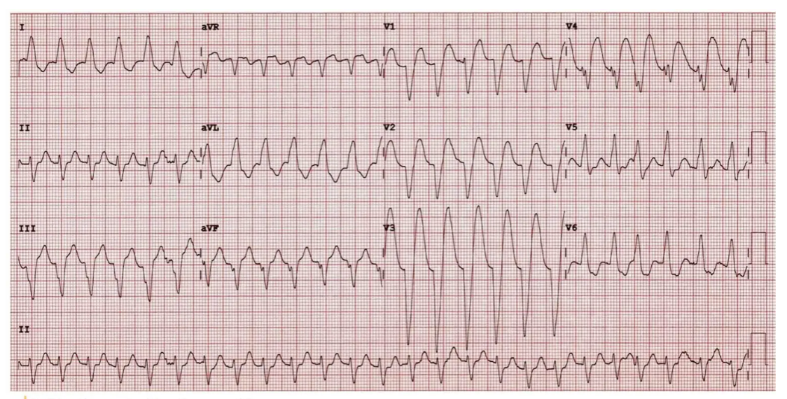
Click to Reveal Answer
- A QRS of 140 ms is what defines the bundle branch block. It tells you conduction is abnormal and nothing whatever about ischemia.
- Discordant ST elevation in V1–V3 is expected in LBBB. Where the QRS is predominantly negative the ST segment normally points the opposite way, so elevation in those leads on its own proves nothing. This is the single commonest reason LBBB tracings get over-called.
- Deep S waves in V1 and V2 are part of the normal LBBB pattern — the QS or rS complex in the right precordial leads. Again a feature of the block, not of infarction.
A wide QRS (≥120 ms) from a slow detour through the ventricle. Look at V1 and V6 to name the block.
Bundle branch block — name it from V1 and V6
| RBBB — MaRRoW | LBBB — WiLLiaM | |
|---|---|---|
| V1 | rSR′ "rabbit ears" (M) | deep QS (W) |
| V6 | wide slurred S (W) | broad notched R, no septal Q (M) |
| Meaning | often benign | always pathologic; discordant ST-T |
The mnemonic, and why it works80-word note
Fascicular blocks
Fascicular blocks: LAFB → left axis (−45° to −90°), qR in aVL, rS inferiorly, QRS <120; LPFB → right axis (rarer).
Pre-excitation — WPW
WPW: short PR (<120 ms), delta wave, wide QRS, secondary ST-T changes.
Bifascicular and trifascicular block
Bifascicular = RBBB plus one fascicular block. RBBB with LAFB (left axis) is much the commoner pair; RBBB with LPFB (right axis) is rare and implies more extensive disease. Trifascicular is a loose term — strictly it means bifascicular block plus a delay in the remaining fascicle, most often reported as bifascicular block with first-degree AV block. It is not the same as complete heart block, and the label alone does not mandate pacing; symptoms and documented higher-grade block do.
Find the pacing spikes, then ask two questions: is each spike producing a beat (capture), and is the device seeing the heart (sensing)?
NBG code
Position 1 chamber Paced · 2 chamber Sensed · 3 Response (I/T/D) · 4 rate modulation (R). VVI = ventricle paced+sensed, inhibited. DDD = dual everything. CRT/BiV = biventricular for HF with LBBB. A paced ventricular beat looks like LBBB (RV apical pacing).
Malfunction
- Failure to capture — spike present, no complex follows.
- Undersensing — spikes fire despite native beats (doesn't "see" them).
- Oversensing — inappropriately inhibited by T waves / myopotentials → pauses.
- Failure to pace — no spike when one is needed.
Ambulatory monitoring (match duration to symptom frequency)
A bigger chamber writes a bigger, odder deflection. Read the P wave in II and V1 for the atria; read QRS voltage for the ventricles.
Atrial abnormality
- Left (LAA) — wide notched "M" P ≥120 ms in II = P mitrale; deep, wide (≥1 mm, ≥40 ms) negative terminal in V1.
- Right (RAA) — tall peaked P >2.5 mm in II = P pulmonale; initial positive >1.5 mm in V1.
The one-line rule83-word note
Left ventricular hypertrophy — voltage criteria
Using it66-word note
Using it53-word note
Right ventricular hypertrophy
RVH: R>S in V1, right axis deviation, RAA, ± RV strain (V1–3) — think pulmonary HTN / cor pulmonale.
Low voltage
Low-voltage differential — "fat, fluid, air, infiltrate": obesity, pericardial effusion, COPD, hypothyroidism, amyloid.
The ST segment is the headline: elevation = injury/occlusion, depression and T-inversion = ischemia. Localize by lead group and always hunt for reciprocal change.
Ischemic cascade
Hyperacute T (tall, broad, symmetric) → ST elevation (convex / "tombstone") → T-wave inversion → pathologic Q (>40 ms wide or >25% of R height).
The stages overlap — read the combination173-word note
STEMI criteria (4th Universal Definition) — STE in ≥2 contiguous leads
Draw a line from the J point to the top of the T148-word note
| Territory | Leads | Artery |
|---|---|---|
| Anterior/septal | V1–V4 | LAD |
| Lateral | I, aVL, V5–V6 | LCx / diagonal |
| Inferior | II, III, aVF | RCA (85%) / LCx |
| Posterior | ST↓ V1–V3 (mirror); STE V7–9 ≥0.5 mm | RCA / LCx |
| Right ventricle | STE in V4R | proximal RCA |
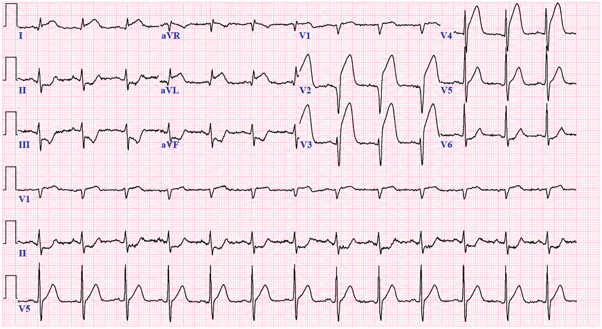
Click to Reveal Answer
- Inferior infarction elevates II, III and aVF.
- Lateral infarction elevates I, aVL, V5 and V6.
- Posterior infarction shows ST depression in V1–V3 with tall R waves, not elevation.
- RV infarction is suggested by elevation in V1 with inferior changes and is confirmed on a right-sided V4R.
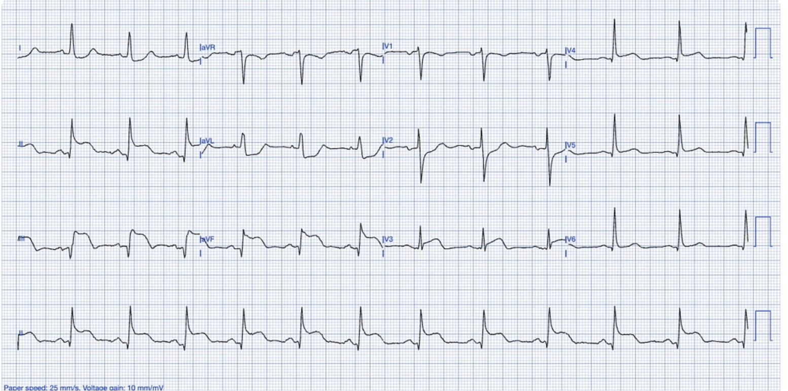
Click to Reveal Answer
- Anterior involvement would elevate V1–V4, and posterior leads are for suspected posterior infarction.
- Lateral infarction elevates I, aVL, V5 and V6 — not the inferior leads.
- Posterior infarction shows ST depression in V1–V3; V7–V9 confirm it, but that is not this pattern.
- Septal infarction elevates V1–V2.
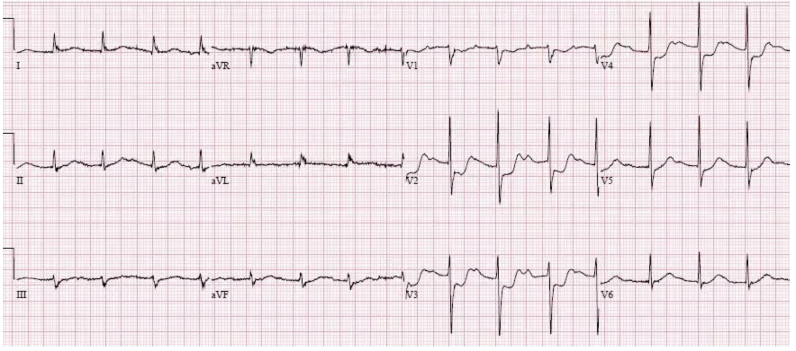
Click to Reveal Answer
- Anterior ischemia produces depression or T inversion without tall R waves and without upright T waves.
- RVH gives R taller than S in V1 with right axis deviation, and it is not an acute finding.
- Treating this as an NSTEMI is the classic and dangerous error — it is an occlusion, and medical management delays reperfusion.
- Benign early repolarisation produces concave ST elevation with a notched J point, not depression.
Ischemia without ST elevation — NSTEMI
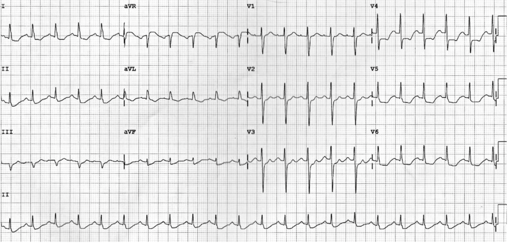
Click to Reveal Answer
- The ECG alone establishes ischemia but cannot distinguish NSTEMI from unstable angina.
- Echocardiography may show regional dysfunction but does not define infarction.
- A stress test is contraindicated in the acute setting.
- A repeat ECG is appropriate to track evolution but does not itself confirm infarction.
Equivalents not to miss
- Wellens — biphasic (Type A) or deep symmetric (Type B) T inversions in V2–V3 while pain-free → critical proximal LAD. Do NOT stress test; cath.
- de Winter — upsloping ST depression >1 mm with tall symmetric T waves (± STE in aVR) → acute LAD occlusion. Treat as STEMI.
- Posterior MI — isolated ST↓ V1–V3; get V7–V9.
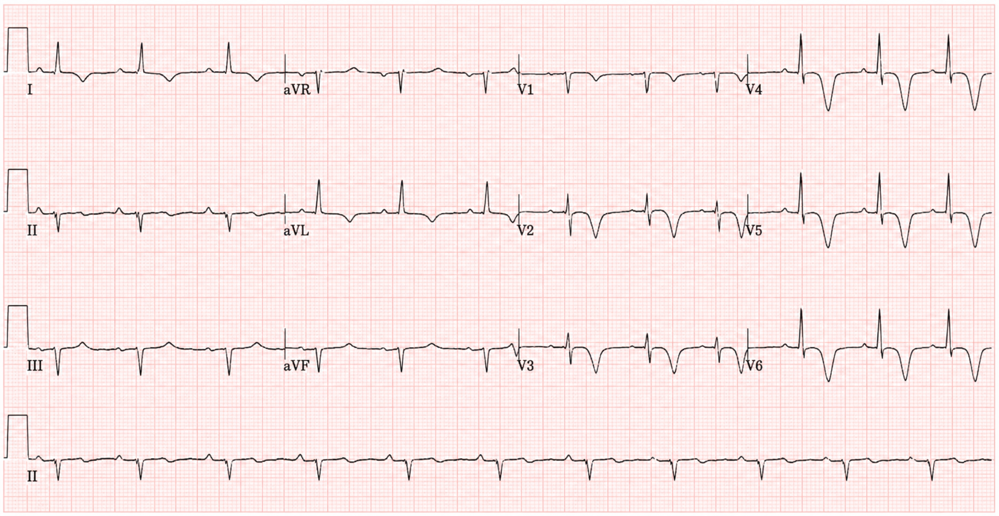
Click to Reveal Answer
- Angiography is the definitive and correct step.
- Serial troponins are appropriate, and are often normal — part of what makes the pattern deceptive.
- Admission is mandatory, not something to avoid.
- Aspirin is appropriate antiplatelet therapy.
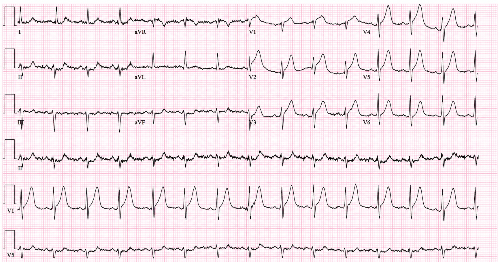
Click to Reveal Answer
- Medical management misses an acute occlusion; this is a STEMI-equivalent.
- Discharge would be catastrophic in an acute LAD occlusion.
- Stress testing is contraindicated with an active occlusion.
- Waiting for evolution is the specific trap: in roughly half of cases the pattern never evolves into recognisable ST elevation.
Sgarbossa (MI in LBBB / paced)
Concordant STE ≥1 mm (most specific) · concordant ST↓ ≥1 mm V1–3 · discordant STE ≥5 mm. Modified: replace the 5 mm rule with ST/S ratio ≥25% (sensitivity 52% → 91%).
Finding infarction behind an LBBB or paced rhythm
Why the modification matters92-word note
The ECG is a window onto chemistry and drug levels. A handful of these patterns are genuinely can't-miss.
Electrolytes
- Hyperkalemia (progressive): peaked narrow T (5.5–6.5) → PR prolongation, P flattening, QRS widening (6.5–7.5) → loss of P, sine wave (7+) → VF/asystole. QRS widens at both ends (unlike BBB).
- Hypokalemia — ST depression, flat T, prominent U waves (V2–3), long QU; risk of torsades.
- Calcium — high Ca → short QT; low Ca → long QT. Calcium tweaks the ST segment; potassium tweaks the T wave.
Board move58-word note
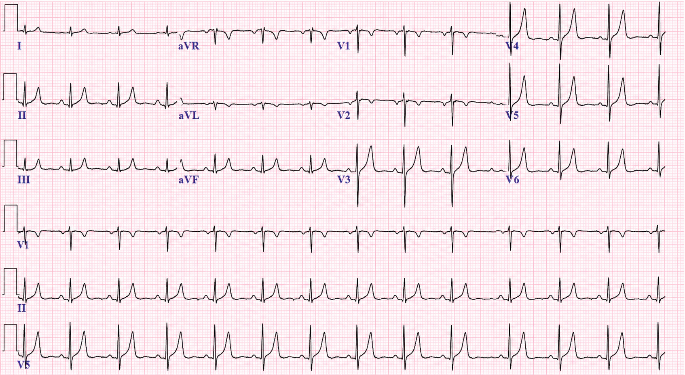
Click to Reveal Answer
- Hyperacute T waves of early infarction are tall but broad, and are confined to a coronary territory rather than appearing diffusely.
- Benign early repolarisation gives concave ST elevation with a notched J point, not tented T waves.
- Hypokalemia does the opposite: flattened T waves, ST sagging, prominent U waves and a long QT–U.
- A normal athletic variant would not produce narrow-based tented T waves across multiple lead groups.
Drugs
Digitalis effect = scooped "Salvador Dalí" ST sagging (therapeutic); toxicity = atrial tach with block, bidirectional VT, accelerated junctional. QT-prolongers (class IA/III, macrolides, fluoroquinolones, antipsychotics, methadone) → torsades. TCA overdose → sinus tach, wide QRS, terminal R in aVR >3 mm.
Every pattern here has a benign twin or a dangerous doppelgänger. Grouping them in one place is deliberate: the discriminators only make sense side by side, and on the exam the distractor is almost always the mimic.
LVH strain versus ischemia
LVH strain: asymmetric ST depression / T inversion in lateral leads (I, aVL, V5–6).
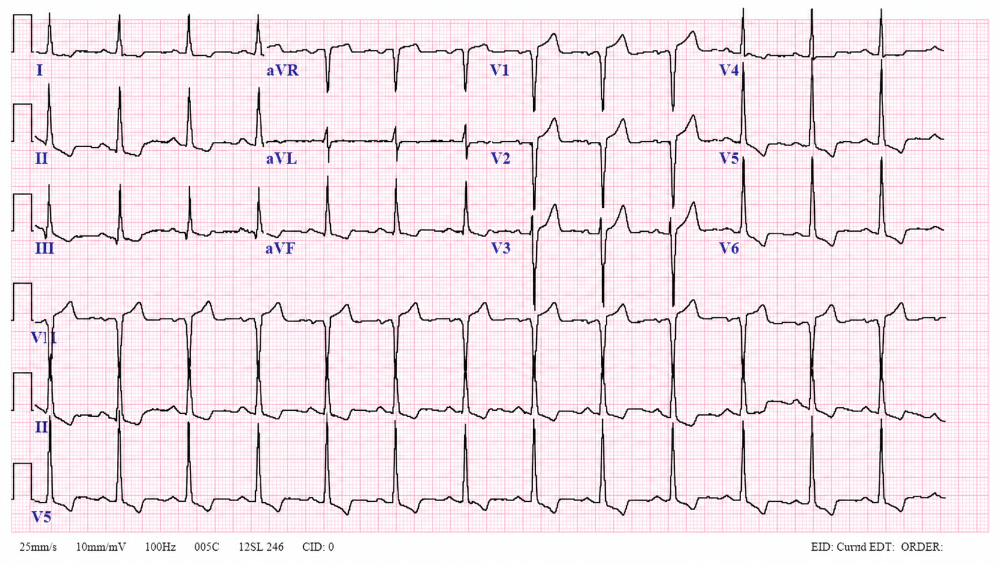
Click to Reveal Answer
- Lateral NSTEMI produces symmetric T inversion with flat or downsloping ST depression, and is not restricted to leads with tall R waves.
- LBBB requires a QRS of 120 ms or more with a broad notched R in V6 and a deep QS in V1.
- Digoxin effect gives scooped, sagging ST segments rather than convex depression with asymmetric T inversion.
- Hypokalemia gives flat T waves with prominent U waves, not high voltage with discordant strain.
Board move94-word note
Normal variants that fake disease
Early repolarization (concave ST elevation, notched J point, young/healthy), persistent juvenile T inversions, vagal effects.
Pericarditis vs STEMI
| Pericarditis | STEMI | |
|---|---|---|
| ST shape | concave "smiley" | convex / straight |
| Distribution | diffuse | regional (territory) |
| Reciprocal | absent (except aVR) | present |
| PR segment | depressed | normal |
Hyperkalemia — the three patterns it imitates
Rising potassium widens the QRS and distorts repolarisation, so severe hyperkalemia can be mistaken for three entirely different emergencies. In every case the tell is the same: look for the peaked, narrow-based T wave and the loss of P waves, and check a potassium before you commit.
| Mistaken for | Why it fools you | What gives hyperkalemia away |
|---|---|---|
| STEMI | Tall T waves resemble hyperacute T waves; severe cases can produce genuine ST elevation, classically in V1–V2 (the “dialysis Brugada” pattern) | Hyperkalemic T waves are narrow-based and tented, not broad; changes are diffuse rather than confined to a coronary territory, and there are no reciprocal changes |
| LBBB | The QRS widens diffusely and can exceed 120 ms with a bizarre, LBBB-like shape | True LBBB preserves discrete P waves and has a reproducible morphology; hyperkalemic widening comes with flattened or absent P waves and peaked T waves, and it reverses within minutes of calcium |
| VT | Extreme widening blurs into a sine wave that looks like a slow, wide monomorphic tachycardia | The rate is usually not fast — hyperkalemic sine wave is typically 60–120, whereas VT runs 140–200; and no P waves were ever visible on the preceding tracing |
VT vs SVT-with-aberrancy → favors VT
AV dissociation, capture beats, fusion beats, precordial concordance, QRS >160 ms, prior MI. Vereckei: an initial R wave in aVR → VT.
Board move53-word note
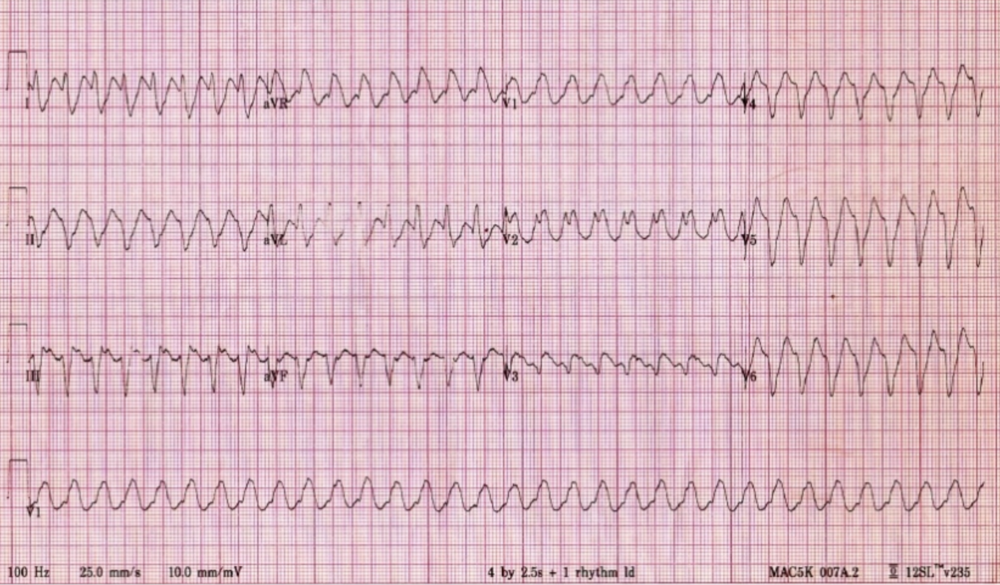
Click to Reveal Answer
- Assuming SVT risks giving an AV-nodal blocker to a patient in VT, which can cause haemodynamic collapse.
- Sinus tachycardia would show P waves at a matching rate.
- Atrial fibrillation is irregularly irregular; this rhythm is regular.
- Calling it artefact delays treatment of a lethal rhythm.

Click to Reveal Answer
- QRS duration overlaps substantially between the two; a QRS above 160 ms favours VT but does not settle it.
- V1 morphology is suggestive at best — both rhythms can produce right or left bundle patterns.
- Rate does not discriminate; both commonly run 150–200.
- Vagal manoeuvres may terminate a nodal-dependent SVT, but failure proves nothing and delays treatment in VT.
Named patterns worth recognising on sight. Each is a single visual association carrying a disproportionate amount of exam weight — and several are the reason a young patient with a normal-looking heart is at risk of sudden death.
Disease patterns
Pericarditis: diffuse concave STE + PR depression, Spodick sign (downsloping TP). PE / cor pulmonale: sinus tach is most common; classic S1Q3T3, RV strain (TWI V1–4). Brugada: Type 1 coved STE ≥2 mm V1–3. Long QT: QTc >500 = high torsades risk (LQT1 exercise, LQT2 auditory, LQT3 sleep). HCM: LVH + deep narrow "dagger" Q waves. Hypothermia: Osborn (J) waves. CNS/SAH: deep "cerebral" T inversions + long QT. Dextrocardia: inverted P/QRS in I, reverse R progression.
ARVC — arrhythmogenic right ventricular cardiomyopathy
Fibro-fatty replacement of RV myocardium in a young patient, and a cause of exercise-related sudden death that the resting ECG can flag. Look for T-wave inversion in V1–V3 beyond age 14 with no RBBB, an epsilon wave (a small discrete deflection in the terminal QRS in V1–V3), prolonged terminal activation duration, and ventricular ectopy or VT with a left bundle morphology and inferior axis — the signature of an RV origin.
The nine patterns, side by side
| Pattern | ECG signature | Why it matters |
|---|---|---|
| Brugada | Coved ST elevation with RBBB-like morphology in V1–V3 (type 1) | Sodium channelopathy; sudden-death risk. Ask about syncope and family history |
| ARVC | T inversion V1–V3 without RBBB, epsilon wave, VT with LBBB morphology and inferior axis | Exercise-related sudden death in the young |
| Long QT | QTc >460 ms (women) / >450 ms (men); often drug-induced or electrolyte-driven | Substrate for torsades — check the medication list |
| Short QT | QTc <340 ms with tall peaked T waves and no ST segment | Rare channelopathy with AF and sudden death; also hypercalcemia and digoxin |
| Torsades de pointes | Polymorphic VT with a QRS axis that twists around the baseline | IV magnesium first, then correct the QT and stop the offending drug |
| Osborn (J) waves | Notched, dome-shaped J point with bradycardia | Hypothermia — resolves with rewarming |
| Pulmonary embolism | S1Q3T3, sinus tachycardia, RBBB, right axis, T inversion V1–V4 | Suggestive but neither sensitive nor specific; sinus tachycardia is commoner than the triad |
| HCM | High LV voltage with deep narrow “dagger” Q waves laterally and inferiorly | Commonest cause of sudden cardiac death in young athletes |
| Electrical alternans | Beat-to-beat variation in QRS amplitude with sinus tachycardia | Large effusion with tamponade — echo and pericardiocentesis, never diurese |
The reflex reads, the can't-miss moves, and the buzzword associations — the points-per-minute payoff of any ECG review, pulled into one place.
- Irregularly irregular, no P waves → atrial fibrillation
- Regular narrow tachy at ~150 → atrial flutter (2:1)
- Regular narrow tachy 150–250, abrupt → AVNRT
- Wide-complex tachycardia → VT (esp. prior MI / structural disease)
- Peaked T waves in a renal patient → hyperkalemia
- Electrical alternans + sinus tach → effusion / tamponade
- Inferior STEMI → V4R before nitrates (RV infarct)
- New LBBB + ischemic pain → Sgarbossa; STEMI-equivalent
- AFib + WPW → procainamide / cardiovert; no AV-nodal blockers
- Torsades → IV magnesium
- Mobitz II / complete block → pacing
- Wellens → no stress test, urgent cath
- de Winter → treat as acute LAD occlusion
- Hyperkalemia w/ ECG changes → IV calcium first
- Sawtooth waves → atrial flutter
- Short PR + delta wave → WPW
- S1Q3T3 → pulmonary embolism
- Osborn (J) waves → hypothermia
- Scooped "Salvador Dalí" ST → digitalis effect
- Deep narrow "dagger" Q waves → HCM
- Coved ST elevation V1–V3 → Brugada
- Prominent U waves → hypokalemia
The highest-priority patterns every PA/MD student must recognize on sight. The ones in red are the can't-miss, time-critical reads.